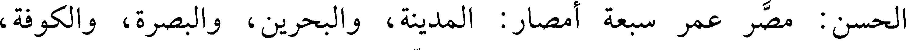
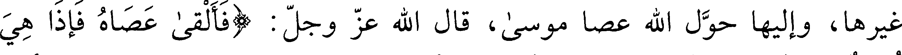
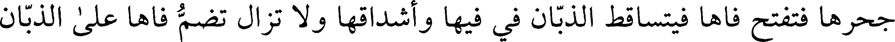
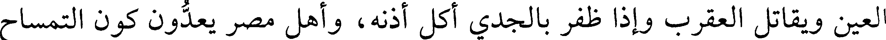

000000.gt.txt

قال: وقال عبد الله بن عمرو بن العاص: البركة عشر بركات، في مصر تسع
000001.gt.txt

بركات وفي الأرضين بركة واحدة. والشر عشرة أجزاء، بمصر جزء واحد، وفي
000002.gt.txt

الأرض كلها تسعة أجزاء وأما معنى قولهم: عمر مصر الأمصار فإنه لم يحدث إلا
000003.gt.txt

البصرة والكوفة، وقد تفعل العرب هذا فتسمي الاثنين باسم الجميع، وقال
000004.gt.txt

الحسن: مصر عمر سبعة أمصار: المدينة، والبحرين، والبصرة، والكوفة،
000005.gt.txt

والجزيرة، والشام، ومصر. وقال أبو الخطاب: لم يذكر الله جل وعز شيئا من
000006.gt.txt

البلدان باسمه في القرآن ما ذكر مصر حين قال: (وقال الذي اشتراه من مصر)
000007.gt.txt

وقال عز وجل: (اهبطوا مصرا)، (وأوحينا إلى موسى وأخيه أن تبوءا لقومكما
000008.gt.txt

بمصر بيوتا) وكناها فقال عز وجل: (وقال نسوة في المدينة امرأة العزيز)
000009.gt.txt

وسماها الله عز وجل الأرض فقال: (وكذلك مكنا ليوسف في الأرض يتبوأ
000010.gt.txt

منها) الآية وسمى الله جل وعز ملكها العزيز فقال: (قالت امرأة العزيز) وقال:
000011.gt.txt

(يا أيها العزيز إن له أبا شيخا كبيرا) وأخبرني شيخ من آل أبي طالب قال: رأيت
000012.gt.txt

بمنف من كور مصر دار فرعون، ودرت في مجالسه، ومشارفه وغرفه وصفافه فإذا
000013.gt.txt

كله حجر واحد منقور، فإن كانوا لا حكوا بينه حتى صار في الملامسة لا يستبين
000014.gt.txt

فيه مجمع حجرين، ولا ملتقى صخرتين، فهذا عجب، وإن كان حجرا واحدا
000015.gt.txt

ذات عيون سفاحة.
000016.gt.txt

ومن مفاخر أهل مصر مارية القبطية أم إبراهيم بن رسول الله (صعلم) ، وتزوج
000017.gt.txt

خمس عشرة امرأة، وتوفي (صعلم) عن تسع، وحرم الله جل وعز مارية على الرجال
000018.gt.txt

بعد أن ولدت إبراهيم من بعد وفاة النبي (عليه السلام) كما حرم سائر نسائه. من
000019.gt.txt

مفاخر مصر هاجر أم إسماعيل (صعلم) الصادق الوعد. وقال النبي (صعلم) : «إذا
000020.gt.txt

استفتحتم مصر فاستوصوا بالقبط خيرا، فإني لهم صهر» . وقالوا: لو عاش إبراهيم
000023.gt.txt

إلى مصر، وأرض مصر جزء من ستين جزءا من أرض السودان، وأرض السودان
000024.gt.txt

جزء من ستين جزءا من الأرض.
000025.gt.txt

ومن مفاخر مصر وسكانها من القبط مؤمن آل فرعون، والسحرة وأصحاب
000026.gt.txt

التوبة النصوح، وهاجر، وآسية، وأم إبراهيم، وفي نسائهم ملح وهن يشبهن في
000027.gt.txt

الحظوة البربريات، والقبط أحذق في الكمانكية (1) واللعب من السند، ومع القبط
000028.gt.txt

خفة عجيبة.
000029.gt.txt

وبمصر جبل المقطم، ويروى عن كعب أنه قال: جبل مصر مقدس من
000030.gt.txt

القصير إلى اليحموم، وسأل كعب رجلا يريد مصر فقال: أهد لي تربة من سفح
000031.gt.txt

مقطمها، فأتاه بجراب، فلما توفي أمر به ففرش تحت جنبه في قبره. وقالوا: جبل
000032.gt.txt

الزمرد من جبال البجة موصول بالمقطم، والمقطم جبل مصر. وقال ابن لهيعة:
000033.gt.txt

سأل المقوقس عمرو بن العاص أن يبيعه سفح المقطم كله بسبعين ألف دينار،
000034.gt.txt

فكتب عمرو إلى عمر فقال عمر: سله لم أعطانا بها وهي لا تستنبط، ولا تزرع
000035.gt.txt

فقال: إني أجد في الكتب أن فيه غرس الجنة، فأعلم عمرو عمر ذلك فكتب إليه:
000036.gt.txt

إنا لا نعلم غراس الجنة إلا للمؤمنين، فاقبر فيه من مات من المسلمين، ولا تبعه
000037.gt.txt

بشيء، فكان أول من قبر فيه رجل من المعافر، يقال له عامر، فقيل عمرت.
000038.gt.txt

ومدينة فسطاط: هي مدينة مصر سميت بذلك لأن عمرو بن العاص ضرب
000039.gt.txt

فسطاطه بذلك المكان بباب أليون، وسويقة وردان بمصر، وبمصر حائط العجوز
000040.gt.txt

على شاطئ النيل، بنته عجوز كانت في أول الدهر ذات مال، وكان لها ابن وكان
000041.gt.txt

واحدها فقتله السبع فقالت: لأمنعن السباع أن ترد النيل، فبنت ذلك الحائط حتى
000042.gt.txt

لا تصل السباع إلى النيل؛ ويقال: إن ذلك الحائط كان طلسما وكان فيه تماثيل،
000043.gt.txt

كل إقليم على هيئتهم وزيهم، والدواب والسلاح، وكل أمة مصورة في طرقها التي
000044.gt.txt

تجيء منها، فإذا أراد أهل إقليم غزو مصر وانتهوا إلى تلك الصور انصرفوا،
000045.gt.txt

ويقال: بني ذلك ليكون حاجزا بين أهل الصعيد والنوبة، لأنهم كانوا يغيرون على
000046.gt.txt

أهل الصعيد ولا يستعرفون، فبني ذلك من أهل النوبة. وقيل أمر بعض الملوك
000047.gt.txt

أفلاطون فبني بناحية مصر مما يلي البر حائطا طوله ثلاثون فرسخا ما بين الفرما إلى
000048.gt.txt

أسوان حاجزا بينهم وبين الحبشة.
000049.gt.txt

وبالفسطاط صورة امرأة من حجر عظيمة قاعدة، على رأسها إجانة وعلى كل
000050.gt.txt

واحدة من ركبتيها درجة إلى غرفة، تسمى أم يزيد الخولانية.
000051.gt.txt

وقالوا: البط ترعى بمصر كما ترعى الغنم، وبها الثعابين وليس هي في بلد
000052.gt.txt

غيرها، وإليها حول الله عصا موسى، قال الله عز وجل: (فألقى عصاه فإذا هي
000053.gt.txt

ثعبان مبين) يعني أنه حولها ثعبانا. ومن أعاجيب مصر النمس، وليس ذلك لأحد
000054.gt.txt

غيرهم، وهي من عجائب الدنيا، وذلك أنها دويبة متحركة كأنها قديرة، فإذا رأت
000055.gt.txt

الثعبان دنت منه، فينطوي الثعبان عليها يريد أن يعضها ويأكلها، فتزفر زفرة تقد
000056.gt.txt

الثعبان بقطعتين، وربما قطعته قطعا، ولولا النمس لأكلت الثعابين أهل مصر،
000057.gt.txt

وهي هناك أنفع لأهلها من القنافذ لأهل سجستان، وسجستان بلد كثير الأفاعي
000058.gt.txt

وفي شروطهم أن لا يقتل لهم قنفذ ولا يصاد. وبمصر أعجوبة أخرى وهي
000059.gt.txt

التمساح، لا يكون إلا في النيل، ويكون في نهر السند مهران (1) ، فإذا عض أوغل
000060.gt.txt

أسنانه واختلفت، فلم يدع ما أخذه حتى يقطع بأسنانه ما قبض من شيء، وحنكه
000061.gt.txt

الأعلى يتحرك ولا يتحرك الأسفل، وليس ذلك في غيره من الدواب، ولا يعمل
000062.gt.txt

الحديد في جلده، وما بين رأسه وذنبه عظم واحد، وليس يلتوي ولا ينقبض لأنه
000063.gt.txt

ليس في ظهره خرز، وإذا انقلب لم يستطع أن يتحرك، وإذا سفد الذكر الأنثى خرج
000064.gt.txt

من النيل فيلقيها على ظهرها ثم يأتيها مثل ما يفعل الرجل بالمرأة، فإذا فرغ أقلبها،
000065.gt.txt

وإن أقرها على ظهرها صيدت، لأنها لا تقدر أن تنقلب، وذنب التمساح حاد جدا،
000066.gt.txt
فربما قتل من الضربة، وربما جر الثور إلى نفسه فيأكله، وله بيض مثل بيض
000067.gt.txt

الأوز، ويبيض ستين بيضة، وله ستون فإذا سفد ففي ستين مرة، فإذا خرج التمساح
000068.gt.txt

من بيضة خرج مثل الحرذون في خلقه وجسمه، فيعظم حتى يكون عشرة أذرع أو
000069.gt.txt

أكثر، وهو يزيد كلما عاش، وإن أخذ من جانب حنكه الأيمن، أول سن في
000070.gt.txt

الحنك وعلق على من به حمى نافض تركته من ساعته، وربما دخل اللحم في
000071.gt.txt

خلال أسنانه فيفتح فاه، وله صديق من الطير يشبه بالطيطوى، يجيئه حتى يسقط
000072.gt.txt

على شدقه فيخلل بمنقاره ذلك اللحم، فيكون ذلك طعاما للطير، وترفيها للتمساح
000073.gt.txt

لأنه ينقى ما في أسنانه من اللحم ويحرسه هذا الطائر ما دام ينقى أسنانه فإن رأى
000074.gt.txt

صيادا أو إنسانا يريده. أو ابن عرس فإنه عدوه أعلمه ذلك وذلك إن ابن عرس
000075.gt.txt

يجيء إلى التمساح وهو نائم ويحب النوم على شط النهر فيستحم في الماء ويتمرغ
000076.gt.txt

في الطين ثم ينتفض حتى يقوم شعره في فم التمساح فيقتله قتلا عنيفا أو يأكل ما
000077.gt.txt

في جوفه فلذلك الطير يحرس التمساح وإذا رأى ابن عرس مقبلا أنبه التمساح وآذنه
000078.gt.txt

فيهرب التمساح إلى الماء وليس هذا بأعجب من الخلد وهي دابة عمياء فتخرج من
000079.gt.txt

جحرها فتفتح فاها فيتساقط الذبان في فيها وأشداقها ولا تزال تضم فاها على الذبان
000080.gt.txt

وتبلعه حتى تشبع ثم تدخل جحرها وليس هذا بأعجب من طائرين يراهما الناس من
000081.gt.txt

أدنى حدود البحر من شق البصرة إلى غاية البحر من شق السند أحدهما كبير
000082.gt.txt

والآخر صغير يقال لأحدهما جوانكرك ويسمى الآخر جرشي فلا يزال الصغير يرنق
000083.gt.txt

على رأس الكبير ويعبث به ويطوف حوله ويخرج من بين رجليه ويغمه ويكربه حتى
000084.gt.txt

يتقيه بذرقة فإذا ذرق الجرشي تلقاه الجوانكرك فلا يخطئ أقصى حلقه حتى كأنه
000085.gt.txt

ردى به في بئر فإذا استوفى ذلك الذرق رجع شبعان ريان بقوت يومه ومضى ذلك
000086.gt.txt

الكبير لطيته وأمرهما مشهور ظاهر، وأعجوبة أخرى وهو إن الدخس من دواب
000087.gt.txt
الماء مما يقايس السمك وليس بسمك يعرض للغريق فيدنو منه حتى يضع الغريق
000088.gt.txt

يده على ظهره فيسبح والغريق يذهب معه ويستعين بالاتكاء عليه والتعلق به حتى
000089.gt.txt

ينجيه، وهو عند البحريين مشهور، قالوا ومن ادهن بشحم حرذون ثم ألقى نفسه
000090.gt.txt

على التمساح في الماء صاده والحرذون دويبة تكون بمصر وزبله ينفع من وجع
000091.gt.txt

العين ويقاتل العقرب وإذا ظفر بالجدي أكل أذنه، وأهل مصر يعدون كون التمساح
000092.gt.txt

في النيل من غرائب ما عندهم وهو كثير في خلجان سندان والزنج ولكنهم لا
000093.gt.txt

يعرفون له هناك هذا الطائر الذي يخلل أسنانه، وكون التمساح موصول في نيل
000094.gt.txt

مصر بوادي مهران وهو وادي السند ومن هناك أتاه. وبمصر من العجائب الفرس
000095.gt.txt

الذي يكون في النيل يأكل التماسيح وغيره من الدواب ويربي هذا الفرس إذا كان
000096.gt.txt

فلوا في البيوت مع النساء والصبيان وفي سنه شفاء من وجع المعدة. والنوبة
000097.gt.txt

والحبشة تتعالج به لأنهم يأكلون الأطعمة الغليظة فيشرفون على الموت من وجع
000098.gt.txt

المعدة فيأخذون سن هذا ويتعالجون به فيبرؤون وأعفاجه تبرئ من الجنون الذي
000099.gt.txt

يأخذ في الأهلة. ومن عجائب النيل دابة تسمى ذا القرن تكون في النيل على أنفها
000100.gt.txt

مثل السيف الحاد تقطع الصخرة إذا ضربتها وربما قتلت به الفيل.
000101.gt.txt

وأهل مصر يعدون النيل من أحد عجائبهم وذلك أنه مخالف لجميع الأودية